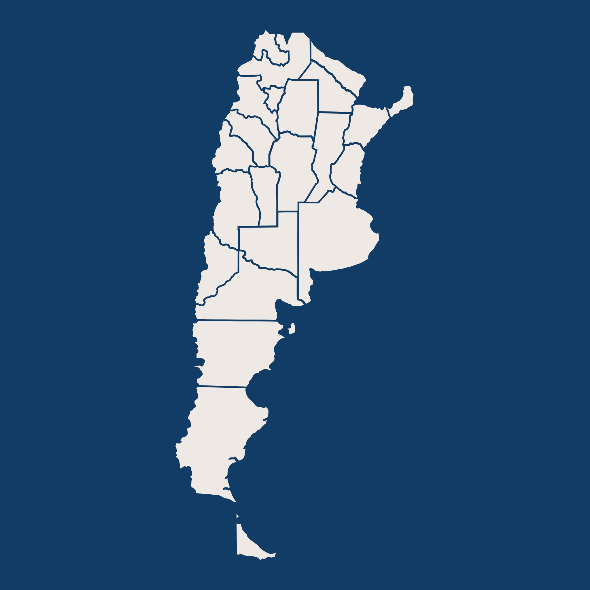

Instante Austral
Inicio
Norte
Centro
Sur
Mapa
Contacto
Explorá
Un mapa de miradas que trazan paisajes.

Identificadores:
Región Norte
Región Centro
Región Sur
Busca por provincia:
Selecciona una provincia
Buenos Aires
Catamarca
Chaco
Chubut
Ciudad Autónoma de Buenos Aires (CABA)
Córdoba
Corrientes
Entre Ríos
Formosa
Jujuy
La Pampa
La Rioja
Mendoza
Misiones
Neuquén
Río Negro
Salta
San Juan
San Luis
Snta Cruz
Santa Fe
Santiago del Estero
Tierra del Fuego
Tucumán
Provincia Seleccionada
Lugar 1
Lugar 2
Lugar 3